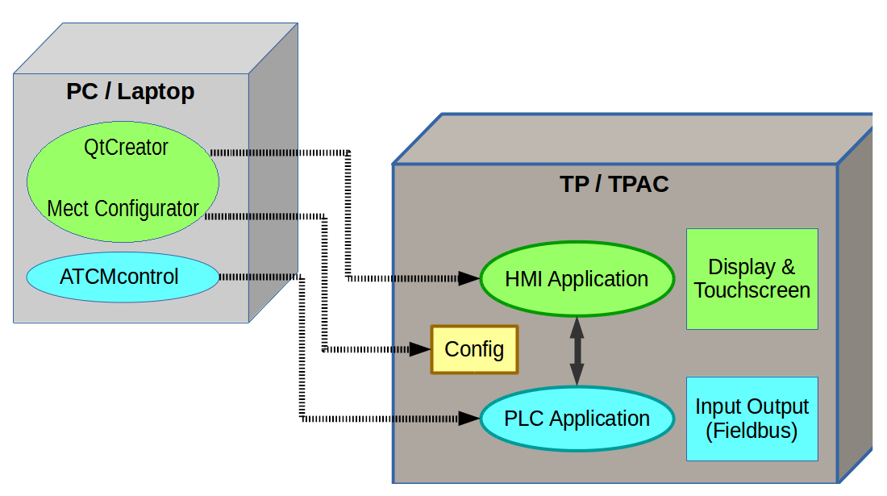

Software on each device Mect (TP, TPAC and TPLC), based on board MPX28, is structured as follows.

On the TP, TPAC and TPLC there are two applications (HMI and PLC) that communicate to each other through a table of variables called “Crosstable”:
HMI Application: graphic application which manage display and touch screen
PLC Application: PLC application (IEC-61131-3) which manage inputs and outputs with the fieldbus (Modbus RTU, Modbus TCP, CANopen, ...)
The setting of the operator panels is done on a PC/Laptop by QtCreator and ATCMcontrol programs.
All this programs are the MectSuite.
Thanks to the deep level of integration between the software, it is possible to create a graphic interface without being an expert programmer.
The Mect Suite is an open system and it is possible to create complex application if needed.
Main Characteristics:
Real Time
Remote control through VNC
Data logging
Debug Online of both HMI and PLC
Recipes
Alarms
Graphics / Trends
Wifi and Mobile (GPRS, UMTS, …) connection [by means of an optional USB dongle]
Setup() & loop(): possibility to create an application only in the HMI development suite (C/C++)
Remote connection OpenVPN
SFTP Secure Server
Protocols:
Modbus TCP client / server
Modbus RTU client / server
Modbus TCP RTU client / server
CANopen